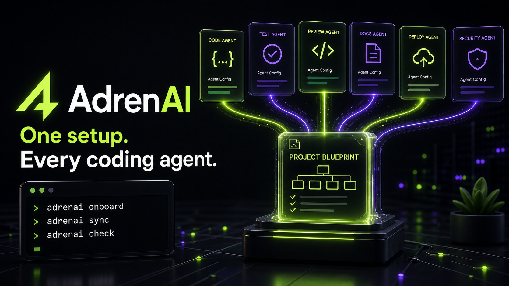

Inspect
Detect frameworks, test tools, CI, agent files, conflicts, and missing safeguards locally.
Open-source agent configuration compiler
AdrenAI inspects your repository, recommends a minimal compatible setup, generates native instructions for every coding agent, and keeps quality gates aligned without requiring AI credits.
$ npx adrenai
Inspecting repository...
Detected
✓ Next.js + TypeScript
✓ Vitest + Playwright
✓ Codex, Claude Code, Cursor
Recommended profile
→ Production TypeScript baseline
5 resolved packs · 3 native agent outputs
✓ No source code will be changed
Native output for the tools developers already use
A focused workflow
Detect frameworks, test tools, CI, agent files, conflicts, and missing safeguards locally.
Resolve a small compatible set of reviewed packs with evidence and clear tradeoffs.
Generate native agent files, lock versions, protect user work, and detect future drift.
Trust through constraints
AdrenAI never silently overwrites user files or executes arbitrary pack content. Important requirements become allowlisted quality gates.

Public beta